Each direction reorganizes Settings and the screens it opens in its own way. All three use your real content, at iPhone width, in Dream’s own look. Values your screenshot doesn’t show are filled in. For example, ChatGPT reads “Connected” today because Dream doesn’t know its week yet, so these mocks give it 92% left.
Below, the same screen appears across all three directions, one row per screen. A mix is fine too.
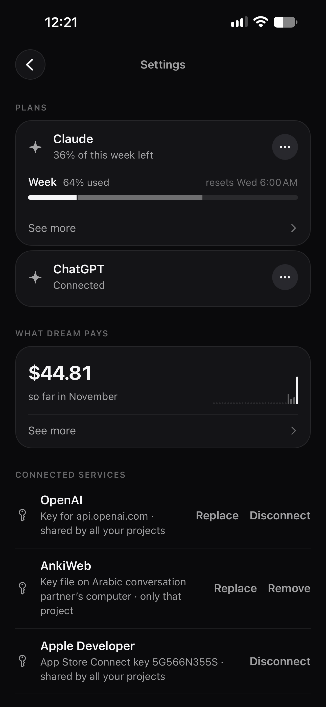
Everything stays on Settings. Each plan, Dream usage, each service and each archived project is a card that opens in place, so nothing leads to a screen of its own.
Gives up: the page grows long and shifts as things open, and the 30-day chart and the full breakdown are squeezed into a card.
Settings becomes a short index of one-line rows with the answer on the right. Every row opens a page built the same way: the figure, then the list, then the actions.
Gives up: nothing is drawn on Settings itself. Seeing the week’s bar or what Dream spent always takes a tap.
Settings separates what you use from what you’ve connected. Two tiles open one Usage screen that switches between the two kinds. Plans and services share one list, and each is managed in a sheet.
Gives up: plans appear twice, once as usage in a tile and again in the Connected list, and there’s a new Usage screen to build.
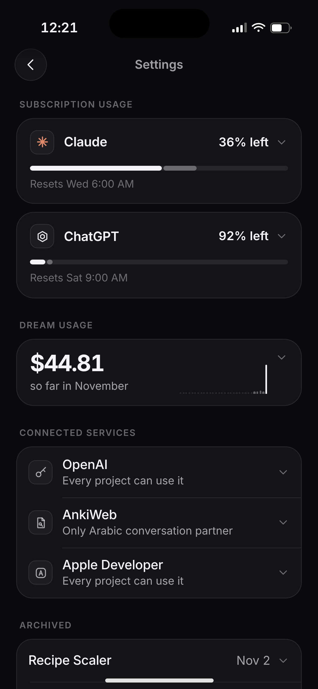
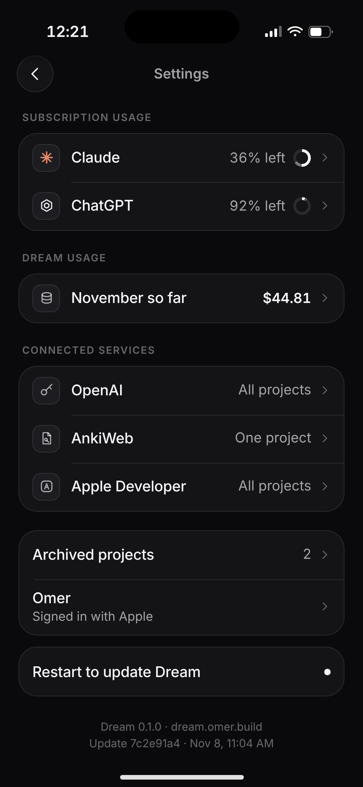
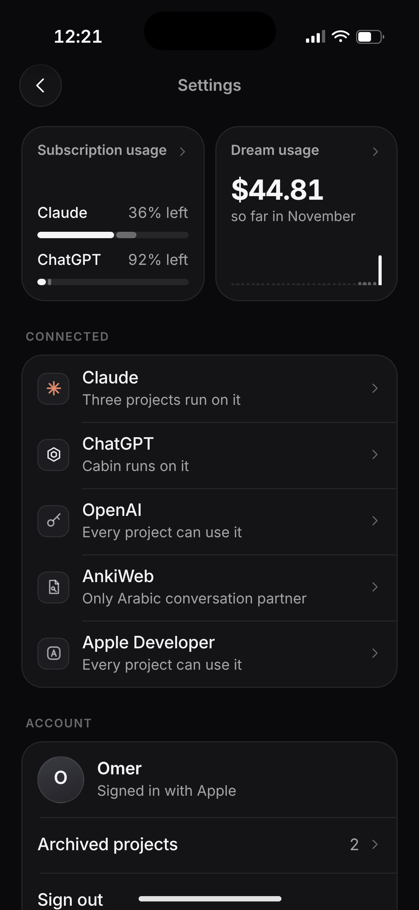
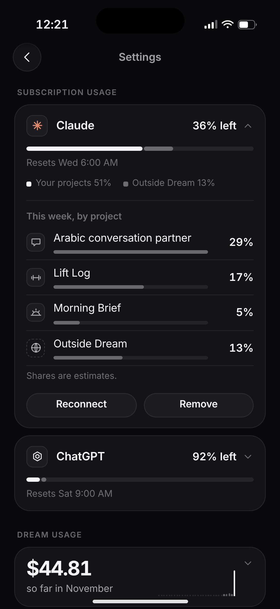
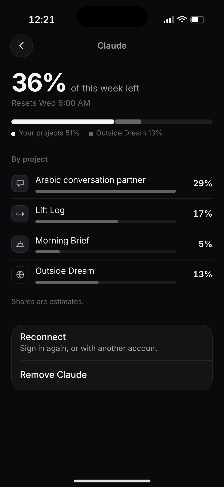
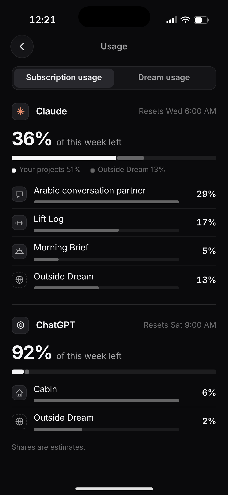
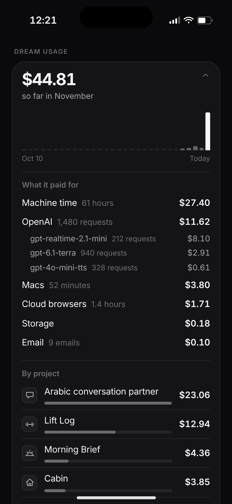
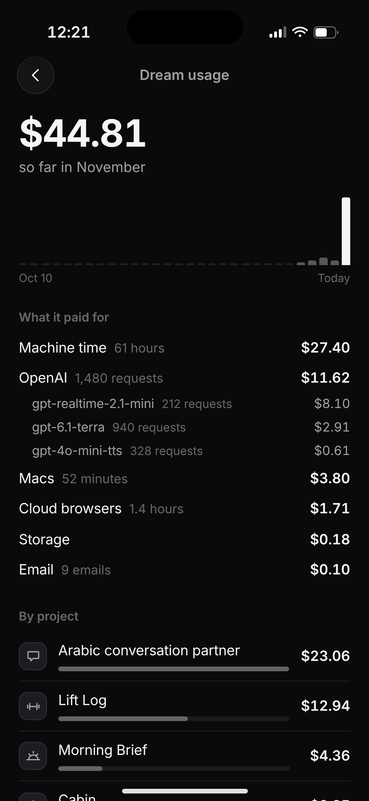
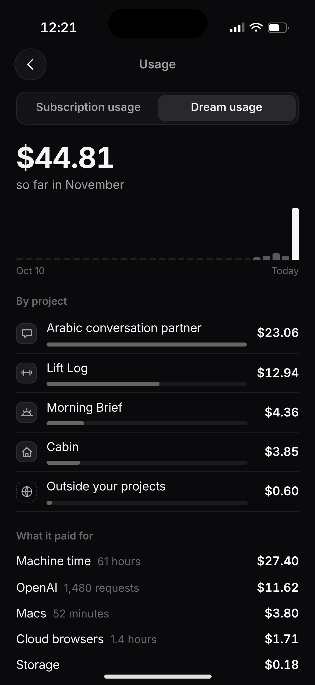
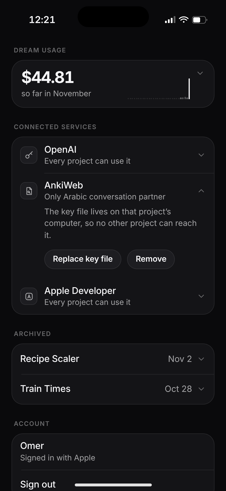
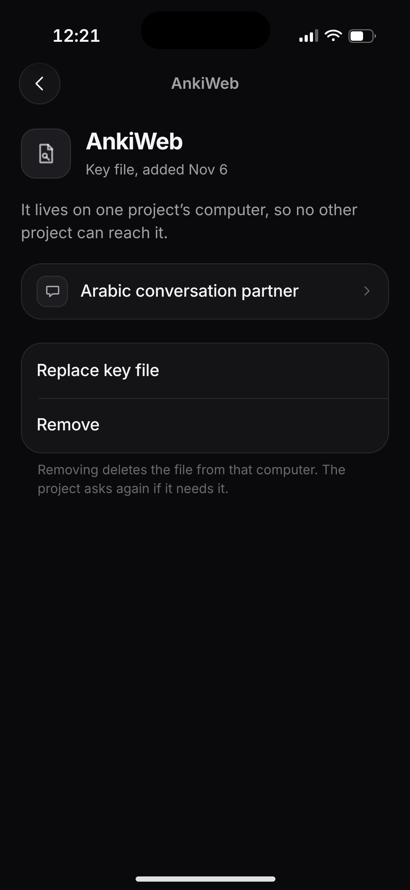
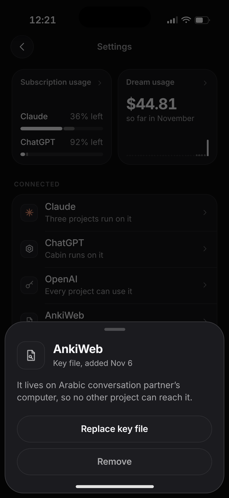
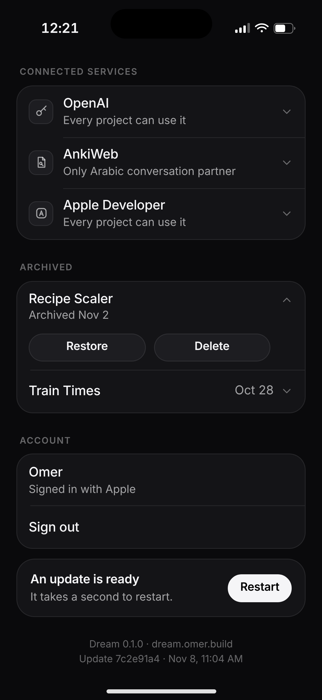
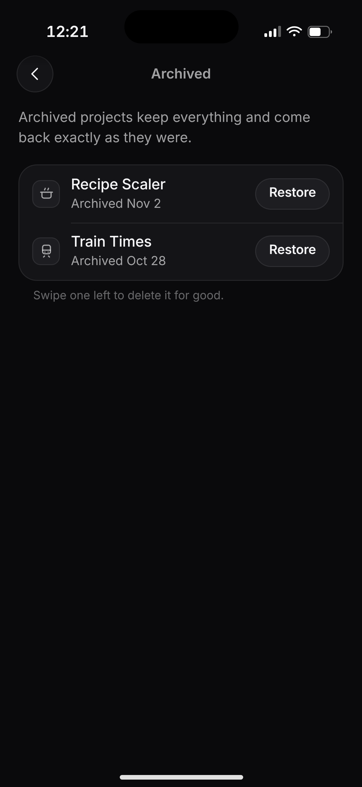
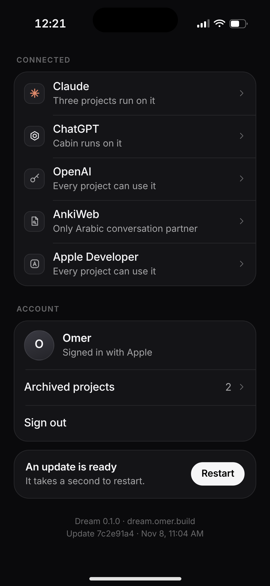
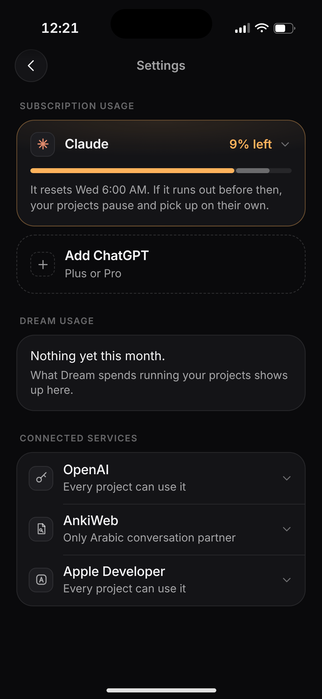
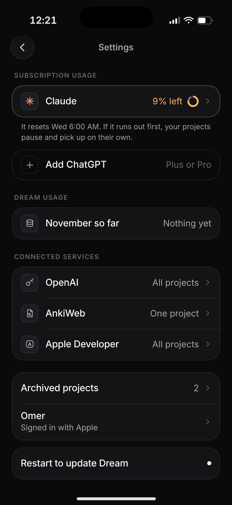
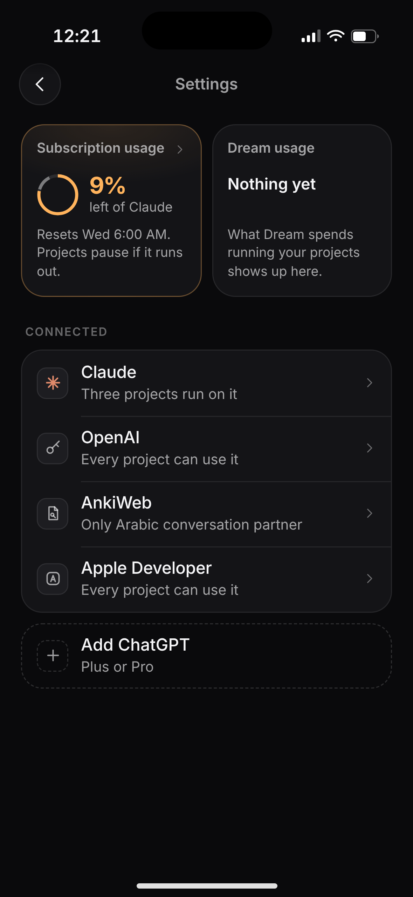